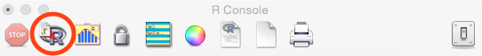
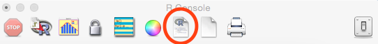

Today's lab introduces the R programming language.
The R programming language is freely available (see below for downloading on your own computer). On the lab machines, R has been downloaded and is in the Applications folder. To find it, navigate to Applications or use Spotlight (the built-in search function-- the magnifying glass icon on the right side of the top menu bar) and type R.
(Note: R can also be launched from the terminal window by typing: R.)
When launched, a window will pop up labeled R Console. This functions much in the same way as the Python Shell. Let's start by saying hello to the world. At the console prompt (the > line at the bottom of the window), type:
print("Hello World!")
The message, Hello World! will be printed below the command, just as it did in the Python shell.
Let's try the same command but stretched out over multiple lines:
print("Hello
When you hit enter, the prompt changes from a > to a + to let you know that R thinks that more is needed for the command. Let's finish it with:
World")
You can end R commands with a enter/return (as in Python), or with a semi-colon (;).
As in Python, we can have comments:
#This is a comment
As in Python, anything after the # is information for the user and is ignored as a command.
We now have all the pieces to write our first R program!
This will be open up a new window where you can write an R program.
#My first R program
#My name
#April 19, 2017
print("Hello World")

You will see a prompt for which file you would like to run. Choose the one you just saved. The output will appear in the console window.

For-loops are very similar in R to those in Python. The basic format is:
for (var in seq) expr
where
Let's use a simple way to create a vector of numbers:
1:10will give 1 2 3 4 5 6 7 8 9 10. The general form is like the range statement in Python:
start:stop
But unlike Python, it includes the last number!
If the stop is smaller than the start, R will create a vector with the numbers in reverse order:
10:1will output 10 9 8 7 6 5 4 3 2 1.
Let's use this simple vector of numbers as the sequence for the for loop:
for (i in 1:5) print(i)
This will print the first 5 numbers.
Let's redo some of our early Python programs in R:
10 9 8 7 6 5 4 3 2 1 Blast off!
If you finish the lab early, now is a great time to get a head start on the programming problems due early next week. There's instructors to help you and you already have Python up and running. The Programming Problem List has problem descriptions, suggested reading, and due dates next to each problem.